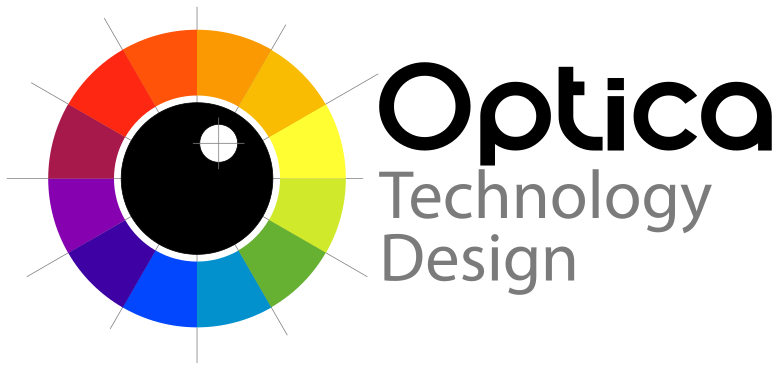
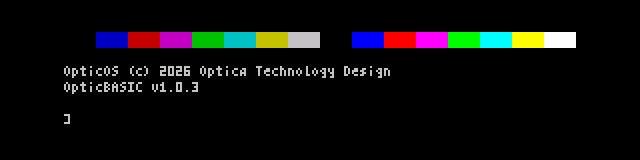

for The Spectrum (Retro Games, 2024)
Welcome! This USB stick turns The Spectrum into an OpticOS machine, with structured OpticBASIC and two games to try. Five steps from the box to playing:
Plug the OpticOS USB stick into The Spectrum and switch on. It starts straight into OpticOS:

Colour bars across the top, then OpticOS (c) 2026 Optica Technology Design, the OpticBASIC version, and the ] prompt, ready for you to type.
Press HOME and choose Media select. Pick a .tzx tape and press M to put it in the tape player (not ENTER):
| opticos_examples.tzx | the OpticBASIC examples, with a menu |
| happybat.tzx | Happy Bat, a flappy-bat game |
| dino.tzx | Dino Run, a dinosaur runner game |
Close the menu to go back to OpticOS. Type LOAD "" and press ENTER. (The " mark is SYMBOL SHIFT + P.)
Hold HOME and press 6 (Down) to open the tape controls, then press Play. The border flashes red and black, then magenta and green, while it loads. Tip: the Tape loading speed setting makes it quicker.
Starts by itself.
SPACE, Q or 7 jump (hold for higher)
A or 6 duck
SPACE to start again
Starts by itself.
SPACE flap
BREAK stop
(BREAK is CAPS SHIFT + SPACE)
The examples menu appears by itself. Leave the tape playing, type LOAD "tree", then RUN to draw a recursive tree. LIST shows how it works.
Not loading? Use the .tzx tapes: .tap files don't load on The Spectrum under OpticOS, and nor does pressing ENTER in Media select. Choose the tape with M, type LOAD "" first, then press Play.
OpticOS manualgithub.com/brixham99/
OpticOS
Dino Rungithub.com/brixham99/
ZX-Dino
Happy Batgithub.com/brixham99/
happy-bat